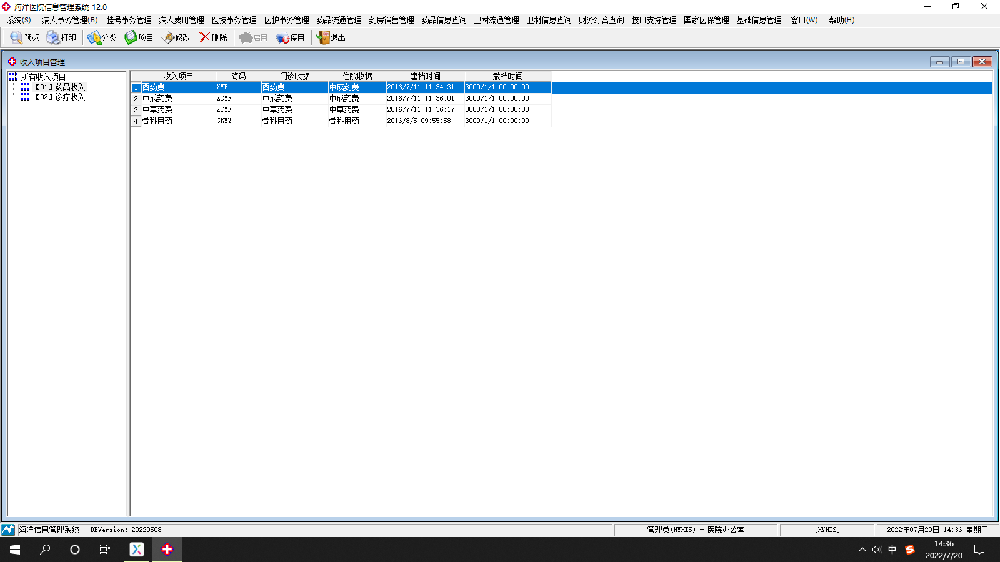
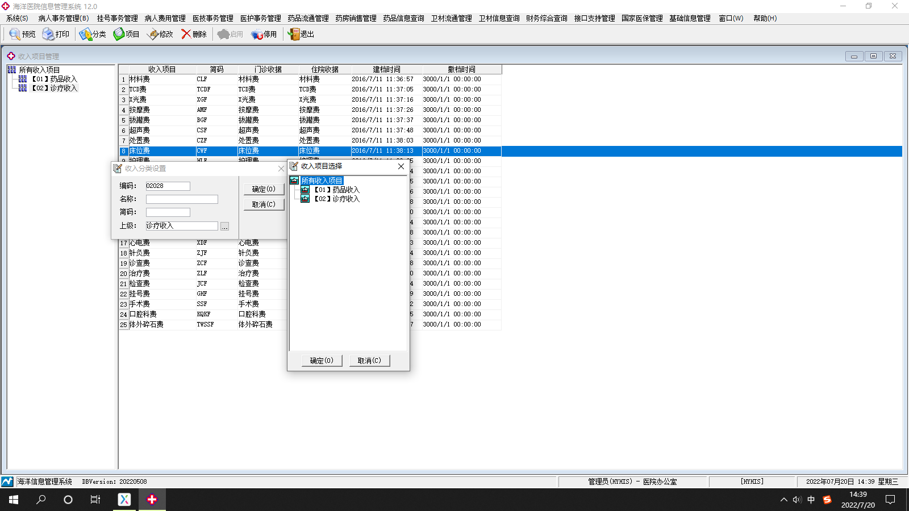
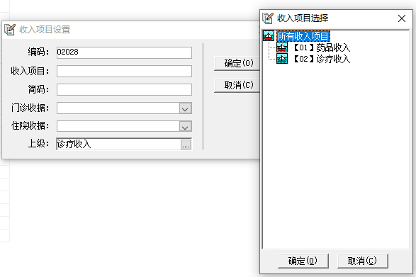
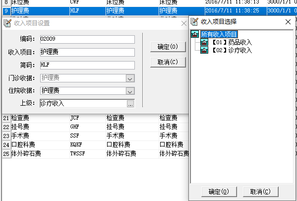

本页主要功能是分类项也就是药品收入和诊疗收入，以及项目的增删改查和停用启用功能
分类-主要是分两大类，药品收入和诊疗收入
项目-在药品或者诊疗大项下增加小的收据费目项目，已存在的收据费目不能重复添加
修改-对某一个具体的小项进行修改
删除-对已存在的收据费目进行删除
停用-单一的某一个小项停止使用
启用-对停用项目进行启用




分类-点击分类会弹出箭头指向页，编码是系统排序，手输名称，简码系统生成，点击上级会弹出箭头指向页
选择是在药品收入下还是诊疗收入下添加子项
项目-点击项目弹出箭头指向页，编码是系统排序，可以添加收入项目在右侧显示，简码系统生成，门诊收据和住院收据
有下拉框，引用字典工具-经济工作-门诊收据费目（住院收据费目），上级点击会出现箭头指向页，就是所添加的项目是
归类到药品收入和诊疗收入哪个类别里面的
修改-点击修改会弹出箭头指向页，可修改收入项目名称，但是门诊收据和住院收据名称不变化，住院收据费目和上级可以
选择调换，修改上级时候会弹出箭头指向页，进行选择
删除-可以选择右侧已添加的小项进行删除，已经使用过的收据费目不可以删除，只能停用